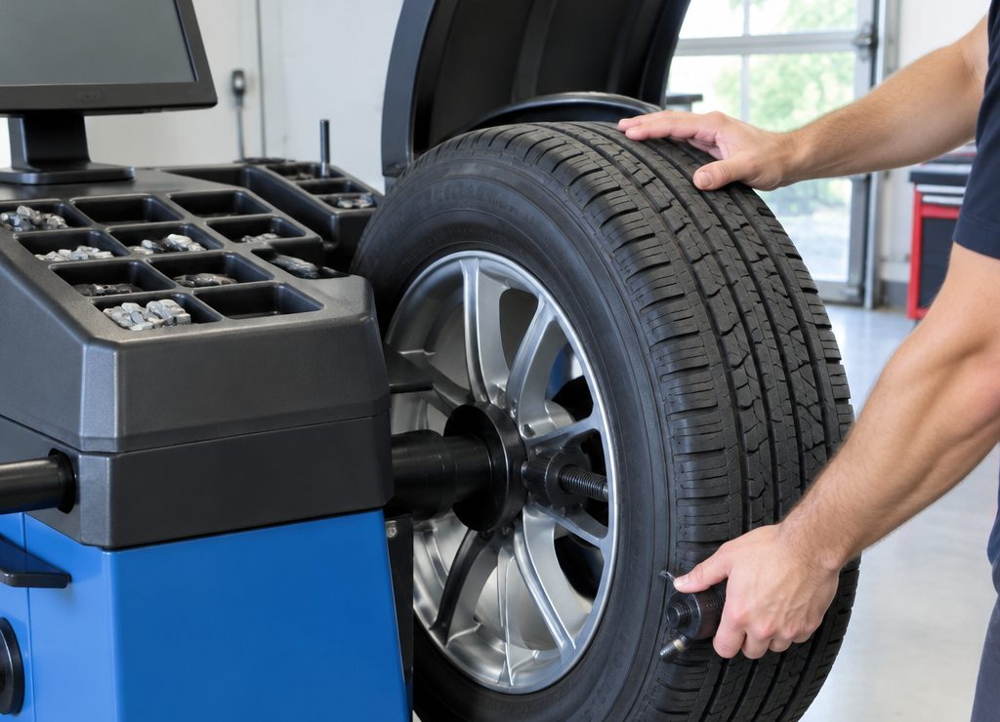
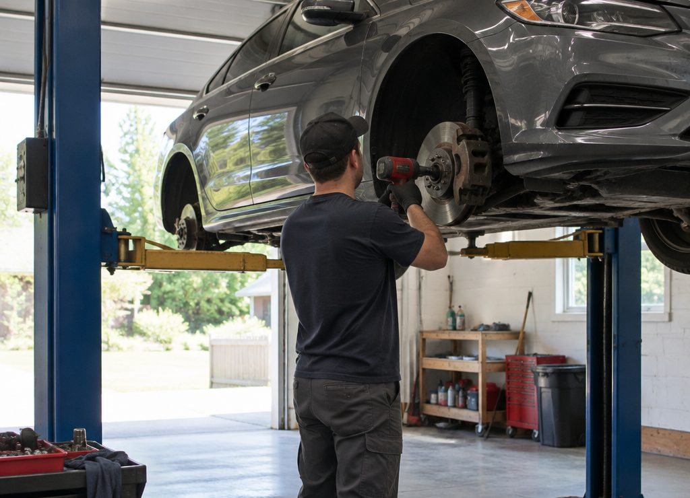

Переобувка комплекта
Снятие колёс, демонтаж и монтаж шин, установка на автомобиль, протяжка крепежа. Летний комплект на зиму и зимний на лето.
Балансировка
Балансировка каждого колеса на станке с установкой грузиков. Без неё на скорости появляется вибрация на руле и полу.
Ремонт прокола
Жгут, грибок или заплатка изнутри — зависит от повреждения. Сначала смотрим, что именно пробито, потом говорим, что делаем.
Проверка давления
Проверка и подкачка до нормы по марке авто, осмотр протектора и боковины. Заодно видно, пора ли менять шины.
Сезонная переобувка
Пик — ноябрь и апрель. Записывайтесь заранее: в эти недели очередь может быть даже там, где её обычно нет.
Шины и диски
Работаем с обычными и литыми дисками, следим за посадочным местом и вентилями. Что не берёмся делать — скажем сразу.

Балансировка
Почему без неё
трясёт руль
Даже новое колесо имеет неравномерное распределение массы: покрышка, диск, вентиль. На скорости это превращается в вибрацию на руле и по полу, а ещё в ускоренный износ подвески.
Поэтому балансируем каждое колесо после монтажа, а не «если попросят». Грузики ставим на диск, а не на шину, и проверяем вентиль: он тоже влияет на баланс.
Детали
Что важно знать
Шесть вопросов, которые задают чаще всего.
Что входит в переобувку комплекта
Снять колёса, разбортировать, поставить другую шину, отбалансировать, установить на автомобиль и протянуть крепёж. Диагностику подвески в это не включаем: это другая работа.
Нужна ли балансировка каждый раз
Да, если шина снималась с диска. Даже при аккуратном монтаже положение покрышки меняется, и без грузиков появляется вибрация. Балансировать «на глаз» нельзя.
Можно ли отремонтировать порез
Зависит от места и размера: боковой порез ремонтировать нельзя, это небезопасно. По протектору — смотрим: жгут, грибок или заплатка изнутри.
Работаете ли с литыми дисками
Да, но аккуратно: литьё требует внимания к посадочному месту и моменту затяжки. Если диск повреждён или «прикипел», скажем об этом до работы.
Сколько это занимает
Комплект обычно укладывается в один визит. Точное время зависит от состояния колёс и загрузки — по телефону назовём ориентир.
Почему нет цен на сайте
Цена зависит от диаметра и типа работ, а ещё от того, нужно ли снимать шины с дисков. Чтобы не называть цифру «в среднем», лучше позвонить: скажем точно.
Визит
Как проходит
Звонок или сообщение
Марка авто, размер шин и что нужно. Этого достаточно, чтобы назвать время и ориентир по работе.
Приезд
Снимаем колёса, смотрим состояние шин и дисков, говорим, что именно делаем.
Работа
Демонтаж, монтаж, балансировка, установка, протяжка крепежа и проверка давления.
Проверка
Показываем, что сделано, и говорим, за чем следить: давление, протектор, вентили.
Заявка
Узнать время
и цену
Размер шин и услуга — этого хватит для точного ответа.
